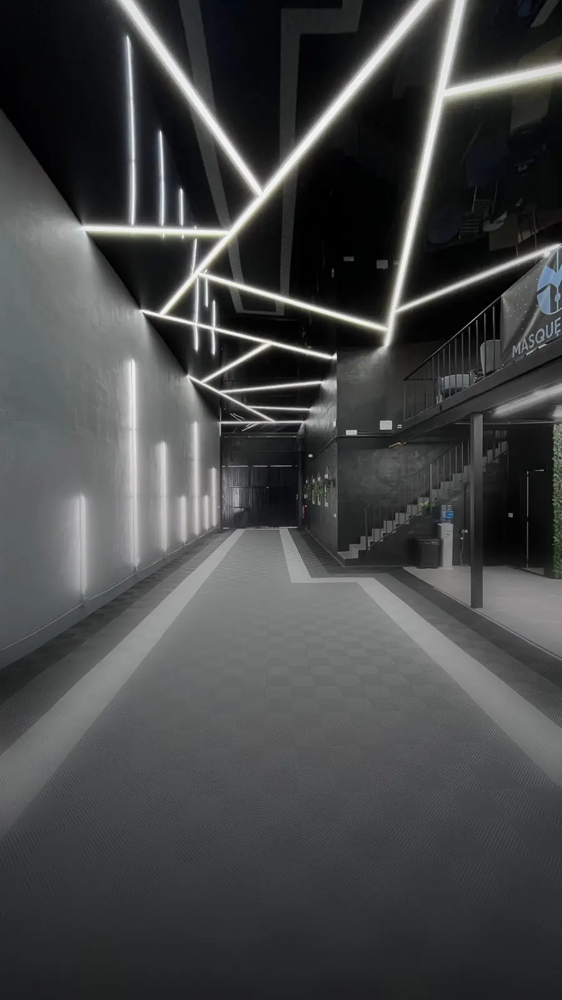

Car detailing premium en Marbella
Especialistas en el cuidado de tu coche
Máxima protección, acabado impecable y atención al detalle.
•Protección PPF
- Vehículos
- Alta gama, deportivos y clásicos
- Taller
- Calle Oro 32 · Marbella
- Atención
- Español · English
Catálogo completo
Servicios
Toca cualquier servicio para ver las opciones y los precios.
Repintar cuesta más que proteger
En un coche de alta gama la pintura de fábrica es parte del valor. El PPF pone 200 micras de poliuretano por delante: la grava se queda ahí.
Una vez que se repinta, ya no es lo mismo.
Simulador de color
Mira cómo queda antes de decidir
Sirve igual para PPF de color y para wrapping: en los dos casos la pintura de fábrica queda intacta debajo.
Elige un color y arrastra la línea para compararlo con el original
Carta de colores —
Los colores son una simulación de referencia: el tono real cambia según la luz, el acabado de la lámina y el estado de la pintura de debajo. Consúltanos por la carta y la disponibilidad exacta antes de decidir.
Dudas
Preguntas frecuentes
¿En qué se diferencian PPF, wrapping y cerámico?
¿Cera o cerámico?
¿Por qué hay que pulir antes de sellar?
¿Cómo es el proceso?
- Diagnóstico. Revisamos el estado de la pintura y confirmamos el precio cerrado antes de empezar.
- Preparación. Lavado y descontaminación. Si la pintura lo necesita, corrección previa: lo que quede debajo se queda ahí.
- Instalación. Patrón cortado a la medida del modelo y aplicación en box cerrado, sin polvo.
- Entrega. Revisión pieza por pieza y tiempo de curado antes de que el coche salga.
¿Se nota que el coche lleva lámina?
Bien instalada, no. La lámina es transparente y los cortes se esconden en los cantos de cada pieza. Lo que sí se nota es el brillo: la superficie queda más lisa que la pintura desnuda.
¿Se puede quitar más adelante?
Sí, y esa es la gracia. Se retira con calor y la pintura de debajo aparece como el día que se aplicó. Por eso funciona tan bien en coches que se piensan vender.
¿Cuánto tiempo se queda el coche en el taller?
Depende de la cobertura y del estado de la pintura. Un sectorizado sale en el día; un full body ocupa el box varios días, sobre todo si hay corrección previa. Te damos la fecha de entrega al confirmar el presupuesto.
¿Puedo lavarlo como siempre?
Sí, con lavado a mano y pH neutro. Lo que conviene evitar son los túneles de rodillos y las pistolas a presión muy cerca de los cantos. Te explicamos el mantenimiento al entregar el coche.
¿Y si la pintura ya tiene arañazos?
Se corrigen antes. La lámina sella lo que haya debajo, así que cualquier marca que no se trate queda ahí dentro para siempre. En el diagnóstico te decimos si hace falta y cuánto suma.
¿Sirve también para embarcaciones?
Sí. Aplicamos PPF en barcos y motos de agua, donde el sol y la sal son todavía más agresivos que en carretera. Se presupuesta aparte, según la eslora y las zonas a cubrir.
Qué hace falta
A la hora de lavar
A la hora de secar
Qué evitar siempre
Dónde estamos
Polígono La Ermita, Marbella
5,0★★★★★en Google
¿Te lo has mirado todo?
Hablemos de tu coche
Déjanos tu teléfono y te preparamos un presupuesto a medida, sin compromiso.
Al enviar aceptas la política de privacidad.
¿Has pasado ya por el taller?
Déjanos tu reseña
Un minuto de tu tiempo ayuda a que otros encuentren el taller.
Dejar una reseña en Google